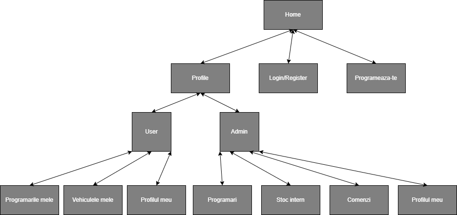
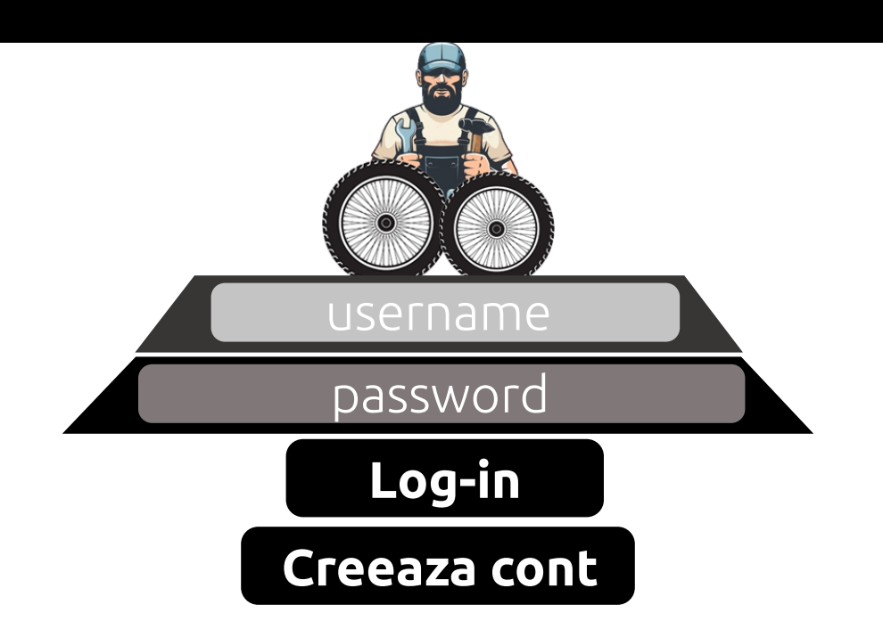
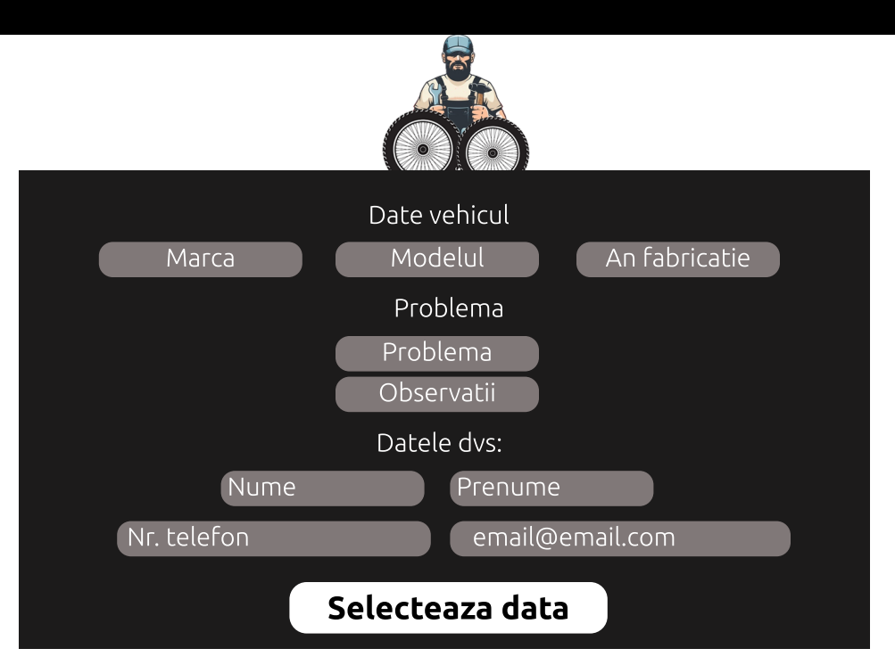

1. Despre proiect
1.1 Cerinta proiectului
Creați un sistem online de management al programărilor și stocurilor unui operatii de service de motociclete, biciclete, trotinete (electrice sau nu). Fiecare client va consulta calendarul service-ului, iar apoi va completa un formular cu data și ora
dorită, plus detalii despre problemă, putând adăuga inclusiv fișiere multimedia (imagini și filme). Administratorul afacerii va putea respinge programarea adăugând un mesaj explicativ: "Ne pare rău, dar nu avem în stoc piesele necesare
pentru reparație, reveniți în S săptămâni" sau o va putea aproba, oferind și un preț estimativ, plus alte detalii de interes. De asemenea, aplicația îi va permite acestuia să țină evidența stocurilor existente, cât și a comenzilor
date către furnizori. Sistemul va putea importa date în format CSV și JSON. Pentru exportul datelor, se va recurge la oricare dintre formatele CSV, JSON, PDF. Bonus: simularea activitatii service-ului pe o perioada de timp: luni/ani.
2.1 Autorii proiectului
Autorii acestui proiect sunt:
2. Structura proiectului
2.1 Site map

2.2 Template - Desktop Home

2.2 Template - Login

2.2 Template - Programeaza-te

3. Module
- Permite utilizatorului logat sa vizualieze programarile in service
- Permite administ5ratorului logat sa vizualizeze programarile in service, stocul intern si comenzile efectuate catre furnizori
- Calendarul programarilor
- Suport pentru exportarea datelor in format diferit:
- JSON
- CSV